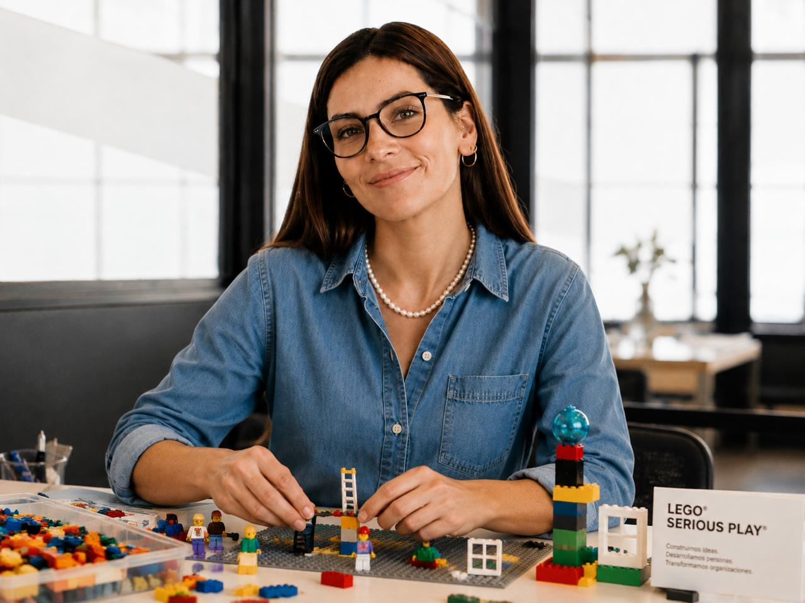

Escuchamos antes de diseñar
No llegamos con una solución prefabricada. Primero entendemos el contexto, las tensiones y las decisiones que la organización necesita habilitar.
co.lmena nace de una forma de entender las organizaciones: la cultura no vive en una presentación ni en una lista de valores. Vive en las decisiones, los procesos, los liderazgos, las conversaciones y la forma real de trabajar.
Por eso no entendemos People & Culture por separado. Las personas hacen posible la cultura y la cultura moldea la manera en que las personas trabajan, deciden, lideran y colaboran.
Conectamos estrategia, operación, cultura, personas y sistemas para entender cómo funciona realmente una organización, identificar qué necesita cambiar y construir las condiciones para que esa transformación permanezca.
Humanizamos organizaciones.
No creemos que negocio y personas deban ser fuerzas opuestas. Diseñar organizaciones más humanas también significa diseñarlas con más claridad, coherencia, responsabilidad, colaboración y capacidad de adaptación.
Fundadora de co.lmena
People & Culture · Transformación organizacional · Desarrollo de equipos
Mi trayectoria combina experiencia en operación, cultura, desarrollo organizacional y transformación de equipos. He trabajado en contextos de crecimiento, profesionalización, diseño de procesos de People, facilitación y cambio organizacional.
Esa experiencia me llevó a una convicción: los problemas de People rara vez están aislados. Normalmente están conectados con la manera en la que una organización toma decisiones, lidera, colabora y opera.
De ahí nace la forma de trabajar de co.lmena: entender antes de intervenir, transformar con las personas e institucionalizar para que el cambio permanezca.
Ver trayectoria en LinkedIn →
Fer Reséndiz · Fundadora de co.lmena
No llegamos con una solución prefabricada. Primero entendemos el contexto, las tensiones y las decisiones que la organización necesita habilitar.
Creemos que las soluciones funcionan mejor cuando las personas que tendrán que vivirlas participan en su construcción.
Nuestro trabajo no termina con una sesión o una recomendación. Buscamos convertir el cambio en prácticas, procesos y sistemas sostenibles.
co.lmena trabaja con una red de especialistas y aliados estratégicos cuando el proyecto requiere expertise adicional.
co.lmena lidera la lectura sistémica de People & Culture e integra expertise especializado cuando el reto lo necesita.
Porque creemos que las organizaciones no se transforman desde afuera. Se construyen con las personas que las hacen posibles.